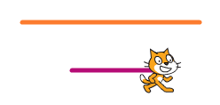
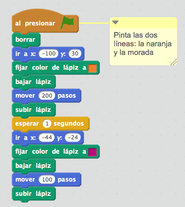
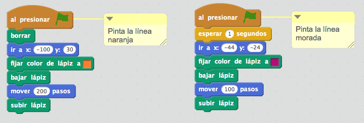
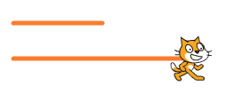
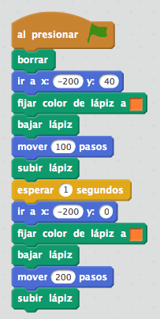
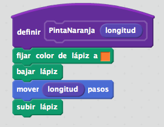
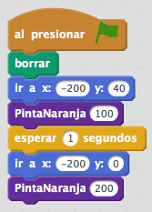
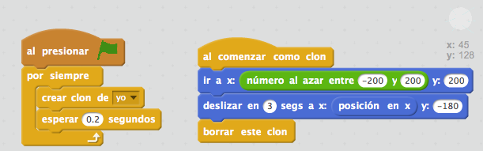

{% trans "The ability of abstraction and decomposition of problems helps you to break a problem into smaller parts that are easier to understand, program and debug." %}
{% trans "If you get 0 points..." %}
{% trans "When you start programming with Scratch, sometimes it may seem that the simplest solution is to program all the behavior of a character in a single program. However, ideally is that character behavior is controlled by different programs and each of these programs deal with a particular issue. Here's an example:" %}


{% trans "This project, which paints a picture on the screen, has been programmed in a single program that draws the two lines that make up the drawing. Although it is a valid option, a simpler option to program and maintain the program is divided into two parts, so that we have two different programs, one to paint the front and another to paint the second:" %}

{% trans "Thus, if we make any changes eg in one of the lines drawn, it is much easier to know which part of the program we need to go to carry out the changes." %}
{% trans "If you get 1 point..." %}
{% trans "Scratch allows new user-defined blocks that consist of a sequence of instructions. These abstractions allow you to create simple programs to read, program and maintain. Here's an example:" %}


{% trans "This Scratch project draws two orange lines of different length on the screen. Rather than repeat the code 2 times, as shown in the example, you can define a 'DrawOrange' block consisting of blocks that paint an orange line on the screen and that you can tell what is the length of the line. For this you go to the category 'More Blocks' and press the Create button a block:" %}

{% trans "Having defined the block 'DrawOrange' it can be used in any program of the project, as we see below:" %}

{% trans "In this way, we avoid repeating code, which makes our projects easier to program and maintain. As can be seen, the first time the block is used DrawOrange prompted a length of 100 steps, whereas the second time length is 200 steps." %}
{% trans "If you get 2 points..." %}
{% trans "In some Scratch projects we have many identical characters that exactly perform the same actions. The first idea that comes to mind to do this is to create a character, schedule all his behavior and once you're ready, make as many copies as you need. Therefore, if we want 20 Martians, create 20 identical objects. However, what if I want to change the program? Would have to go object by object performing this modification." %}
{% trans "For such situations it is preferable to use clones, a type of abstraction that helps us to program a single object, and dynamically create exact copies with the same behavior." %}
{% trans "Let's see how it works with an example. Imagine you want to pretend that it is snowing on a project. We can draw an object that is a snowflake, and once you start implementing the project, constantly be creating clones appear at the top of the screen and they will fall to the bottom:" %}

{% trans "Thus, just by programming a character, we can have infinite clones which are created at a particular time of project implementation and are deleted when they are no longer needed." %}